1
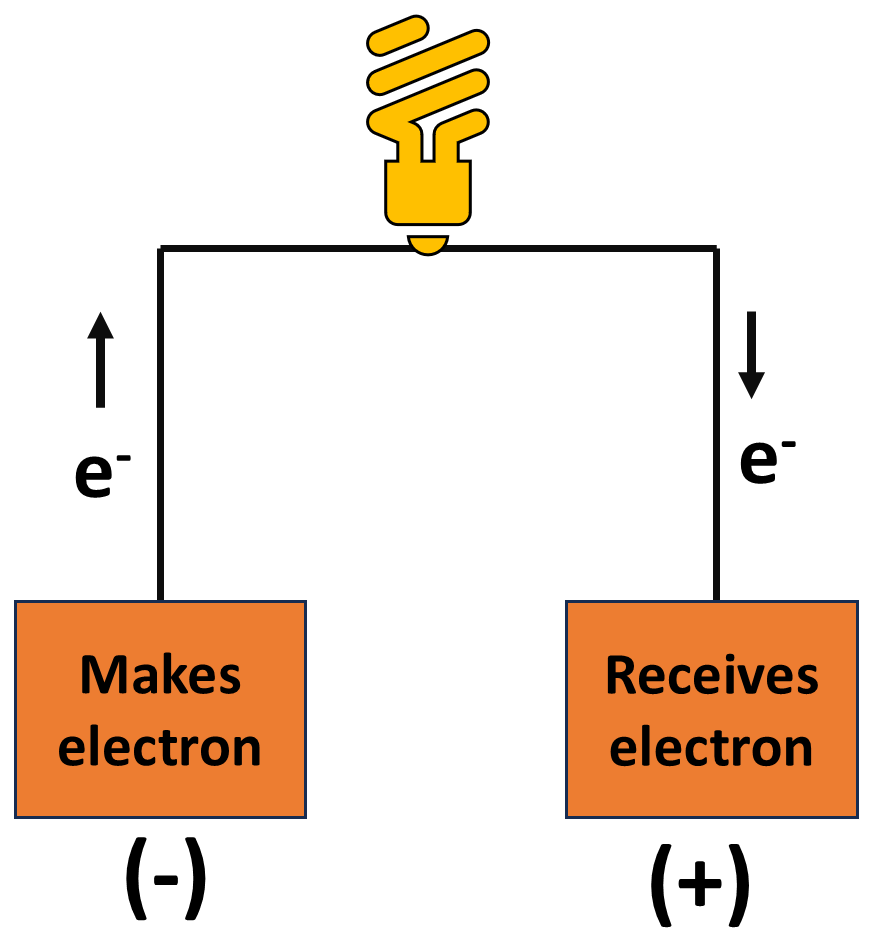
Electricity is a flow of electrons (e⁻). They have a negative charge and flow from the negative (−) terminal to the positive (+) terminal.
To get electricity from a battery, we need to: 1. Generate electrons 2. Make electrons flow.
Build a battery from metals and acid, power a Lego car, and win the race!
Student notes & activity guide · Wed 21 · Thu 22 · Fri 23 Oct 2026
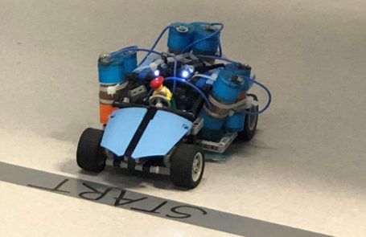
Your race carWhy this matters
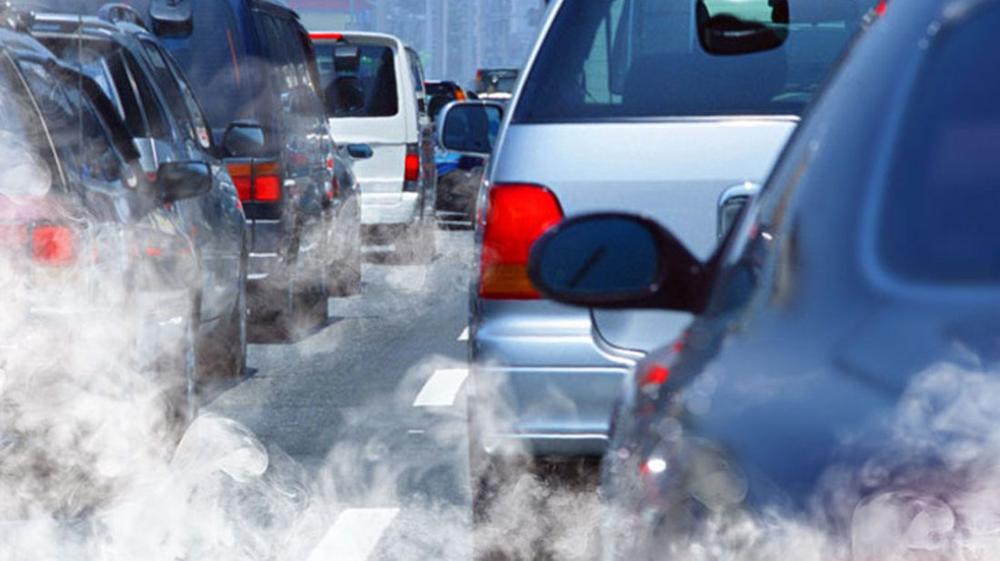
Our reliance on fossil fuel powered cars contributes to climate change, poor air quality and energy insecurity.
Less air pollution and less reliance on fossil fuels
Rechargeable batteries replace petrol as the power source
You will work on one of the biggest shifts in the economy: the electrification of transport.
Dedicated research groups work on renewable energy and next-generation batteries, including lithium-sulfur, aluminium ion and vanadium flow cells. It is one exciting area you can explore in chemical engineering.
Your mission this week
Work in teams of 4–5. Battery construction is guided step by step, and you get the freedom to choose materials near the end.
Race in a new motorsport series on a 5 m straight track.
The team whose battery makes the car go fastest wins!
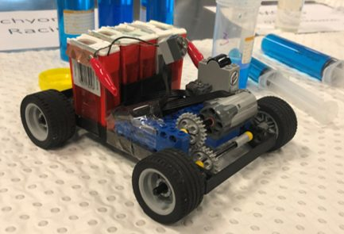
Lego car examples
Plan for the week
Wed 21 Oct
Use a multimeter. Build a simple metal-acid cell. Connect cells in series and parallel.
Thu 22 Oct
Test different metals and solutions. Change the surface area. Design your battery.
Fri 23 Oct
Optimise and build your battery pack. Race your Lego car on the 5 m track.
Every session
PPE for everyone at all times: gloves, goggles and a lab coat.
Wear gloves, goggles and a lab coat. Protect your eyes and hands.
Tell a demonstrator straight away. Work over the trays.
Not in the lab, ever.
Do not touch your face. Wash your hands when you finish.
Metal strips and sheets can cut. Handle with care.
Acid goes in your beaker, then the liquid waste. Sort solids into the right bin.
Ask a demonstrator before you do anything you are unsure about.
Before we start
How hard the battery pushes the charge. We MEASURE it with the multimeter, across the 1 Ω resistor.
How much charge flows each second. We CALCULATE it.
How fast the battery can do work. This is what moves the car! We CALCULATE it.
Our resistor is exactly 1 Ω, so the current in amps has the same number as the voltage in volts (I = V ÷ 1).
We never measure current directly. We measure V across the resistor, then calculate I and P.
Type the voltage you read across the 1 Ω resistor.
Session 1 · Wednesday 21 October 2026
Learn the multimeter, build your first wet cell, and connect cells in series and parallel.
Swipe through. Electricity is a flow of electrons, and a chemical reaction can make them flow.

Electricity is a flow of electrons (e⁻). They have a negative charge and flow from the negative (−) terminal to the positive (+) terminal.
To get electricity from a battery, we need to: 1. Generate electrons 2. Make electrons flow.
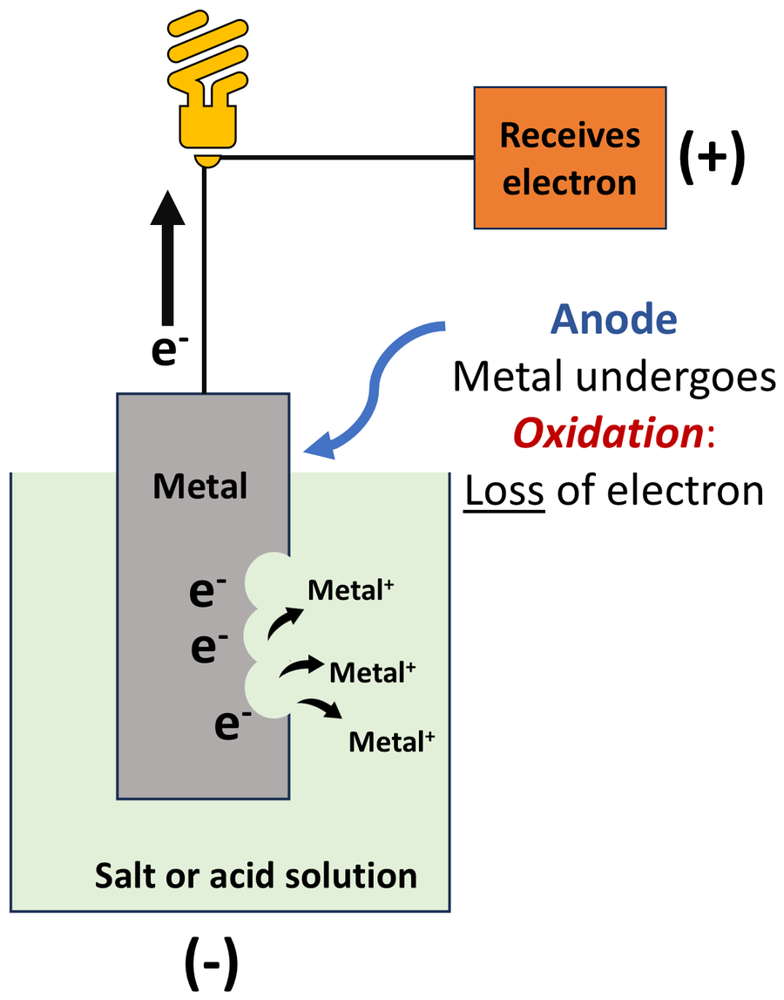
Generate electrons ✓ The e⁻ here comes from oxidation. How do we tap these e⁻ to do work?
Answer
Draw e⁻ via an external circuit with a positive terminal! What can you use as a positive terminal?
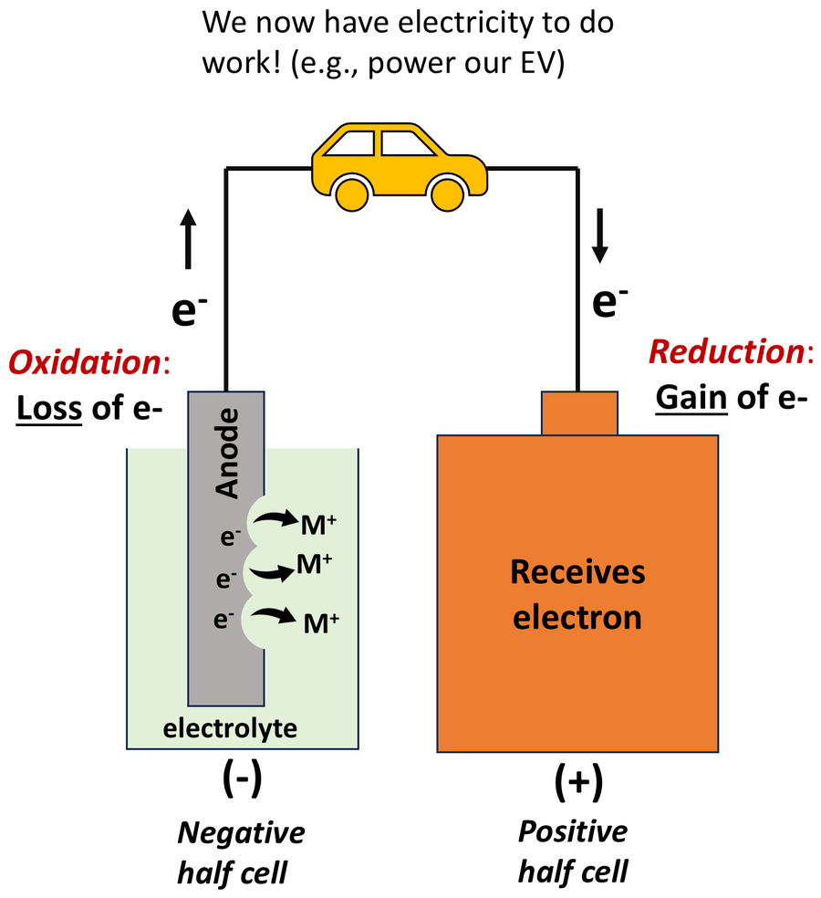
Make electrons flow ✓ Another half-cell can function as a positive terminal.
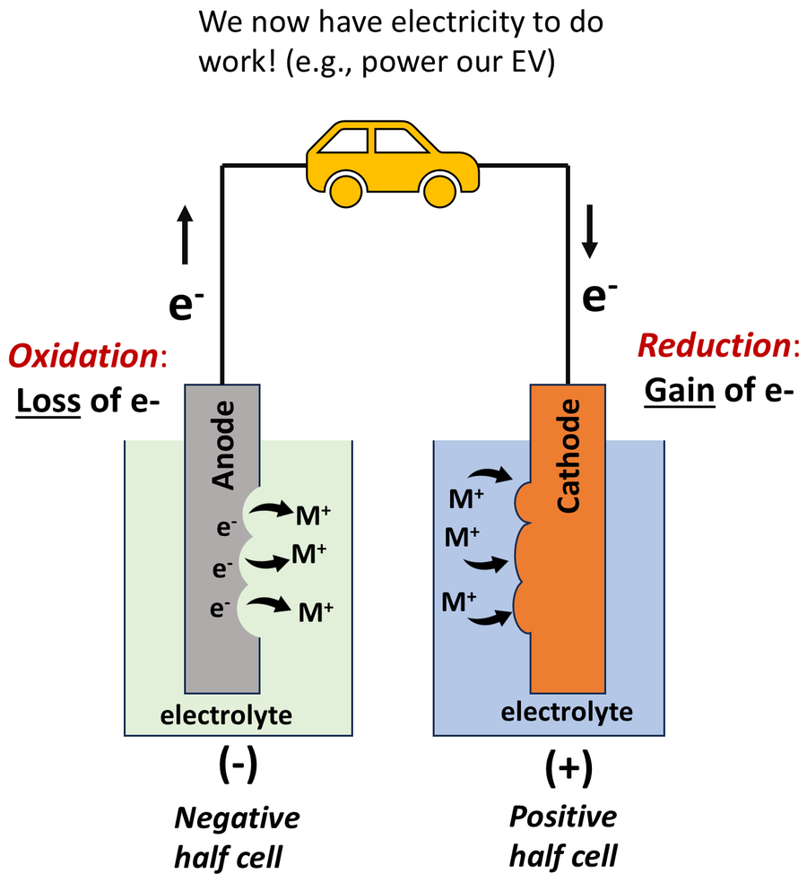
How long do you think the flow of e⁻ will last?
Answer
Only until the charge builds up enough to stop electron flow.
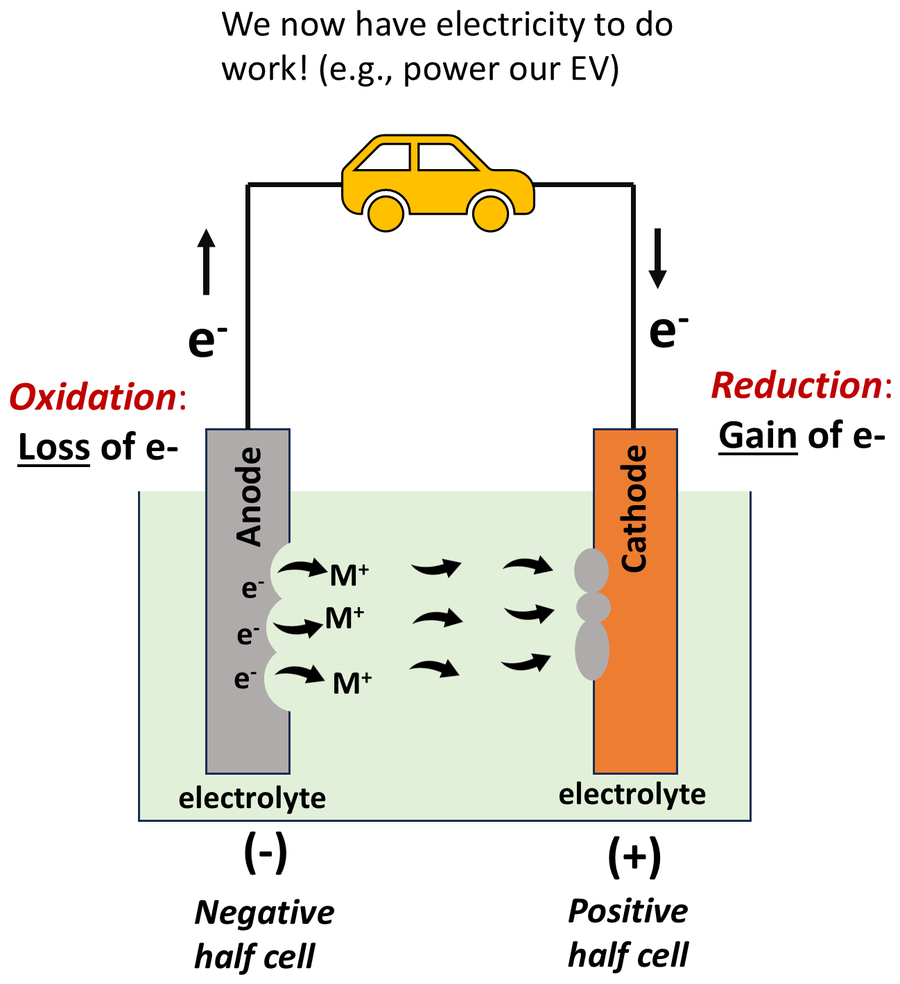
Connecting the two half-cells lets the reaction keep running!
Your main task: battery design. Material selection: anode / cathode / electrolytes. Connecting cells together to make a battery pack!
Tap a step to tick it off
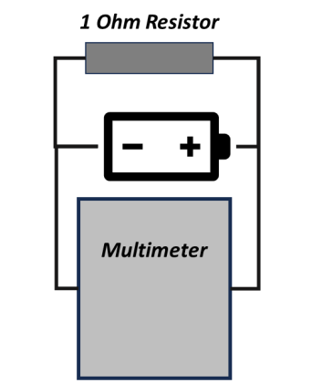
Circuit for Experiment 1
Ask a demonstrator to check your circuit before you connect it.
Voltage every minute for 5 minutes → calculate I and P → plot power vs time.
Tap a step to tick it off
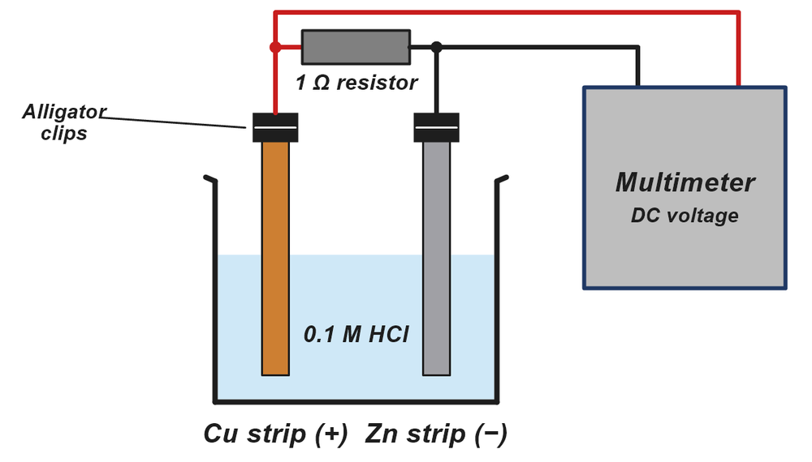
Cu strip (+) · Zn strip (−)
Wear your PPE at all times. Tell a demonstrator straight away about any spills.
Not every group gets one. When you think your cell can do it, ask a demonstrator to try it on the motor.
Bubbles? Does it get warm? Which electrode is positive and which is negative?
Tap a step to tick it off
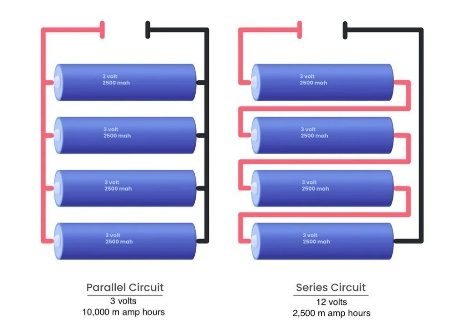
Left: parallel · Right: series
Wear your PPE at all times. Tell a demonstrator straight away about any spills.
Not every group gets one. When you think your cell can do it, ask a demonstrator to try it on the motor.
Which configuration gave the higher voltage? Which gave the higher power?
Session 2 · Thursday 22 October 2026
Change the metals, the solution and the surface area to find your best battery.
Ask the room first, then reveal the answers. Today we change the metals, the solution and the surface area.
More likely to OXIDISE (lose electrons). A better ANODE (negative terminal).
More likely to REDUCE (gain electrons). A better CATHODE (positive terminal).
Pick metals that are far apart!
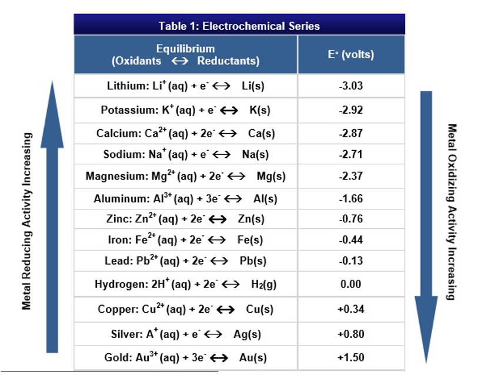
Table 1: Electrochemical series
Which pairing do you predict is best: Cu + Zn, Cu + Mg or Cu + Al? Use the series to explain. Check your prediction in Experiment 1.
This is the expected (standard) voltage. Your real cells will measure lower, and that is part of the learning!
Change only the metal, then only the solution, then only the surface area.
The best pairing goes into Experiment 2, and the best solution into Experiment 3.
Tap a step to tick it off
Same set-up as Session 1
Wear your PPE at all times. Tell a demonstrator straight away about any spills.
Not every group gets one. When you think your cell can do it, ask a demonstrator to try it on the motor.
Pick the best-performing pairing. You will use it for the rest of the session.
Tap a step to tick it off
Same set-up, different solution
Wear your PPE at all times. Tell a demonstrator straight away about any spills.
Not every group gets one. When you think your cell can do it, ask a demonstrator to try it on the motor.
Which solution was best? Why do you think that is? (Strong vs weak acid)
Tap a step to tick it off
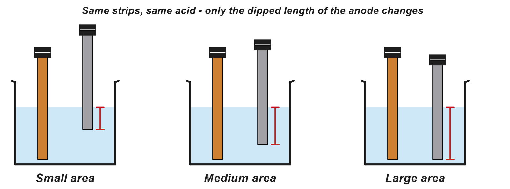
Same strips, same acid. Only the dipped length of the anode changes.
Wear your PPE at all times. Tell a demonstrator straight away about any spills.
Not every group gets one. When you think your cell can do it, ask a demonstrator to try it on the motor.
Which area was best? Was there any trade-off?
Tap a step to tick it off
The Lego car you will fit your cells onto
Today is all about planning. Draw first, and bring your ideas to Session 3.
Session 3 · Friday 23 October 2026
Build your best battery pack, then race your Lego car down the 5 m track.
Mg strips: maximum 10 cm long
All other metals: no bigger than the tic-tac box
Up to 3 of each metal pairing
Maximum 3 cells
Same Lego car for everyone
Ask a demonstrator to try your cells on the car. You can still use the Lego motor if you want.
Tap a step to tick it off
Same car for everyone
Wear your PPE at all times. Tell a demonstrator straight away about any spills.
Changing one thing at a time tells you exactly what made the difference.
Discuss with your team and fill in the decisions table on the back of your handout.
Tap a step to tick it off
straight track. Fastest to the finish line wins!
Do NOT put the solution in your cells until you are at the track. They will discharge. Wear your PPE at all times.
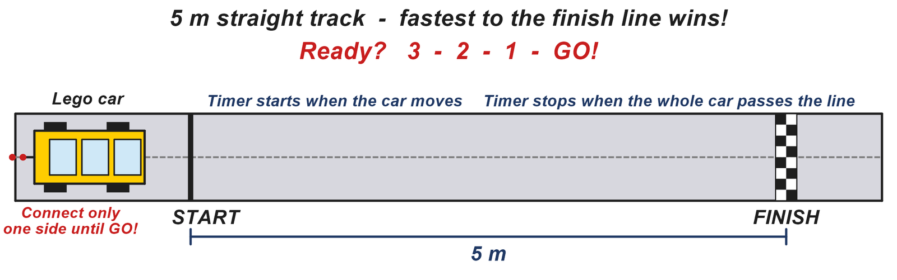
5 m straight track
The timer starts when the car moves and stops when the whole car passes the finish line.
Tap a step to tick it off
Two members set up. Connect ONE side first, count down 3, 2, 1, GO, then connect the car.
Wrap-up
Fastest car
Second fastest car
Team work in all 3 sessions
Asked great questions
Thank you everyone for your effort and curiosity!
Every session
Used acid and DI water rinse. Pour into your waste beaker first, then into the liquid waste container.
Used metal strips and filter papers.
Used gloves go here. Take them off last!
Clean rubbish only: paper and wrappers. Nothing that touched acid.
Tap a step to tick it off
Ask a demonstrator before you put anything in a bin.